The Dresden OCL2 Toolkit is an older version of the Toolkit which is based on the Netbeans Metadata Repository (MDR) and contains a lot of different tools.
The newest version of the toolkit is called Dresden OCL2 Toolkit for Eclipse. More information about the Dresden Toolkit for Eclipse can be found via this link.
A technical introduction into the Dresden OCL2 Toolkit can be found via this link.
Although this is not a stand-alone tool there is a demonstration module coming with the toolkit which helps to understand the way the Toolkit works.
There are seven applications in the Dresden OCL2 Toolkit. The different demonstration modules are listed below with some inspirational screenshots.
This software was written by Stefan Ocke for his diploma thesis. It provides the following functions:
| 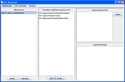 | 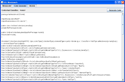 |
| Installed meta model and OCL script |
Generated code |
This software was written by Ansgar Konermann for his diploma thesis. It provides a GUI to the OCL2 parser and allows:
| 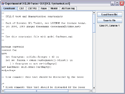 | 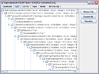 | 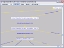 |
| Enter OCL constraint | Parsing constraint results in concrete syntax tree | Visualized concrete syntax tree |
This software was written as a prototype example for the OCL Declarative Code Generator by Florian Heidenreich for his diploma thesis. It provides a GUI to create integrity views from textual OCL invariants and allows:
Please note, that this tool doesn't support association classes and OCL constraints which use the class names instead of association ends for navigation.
| 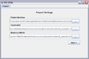 | 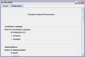 | 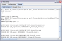 | 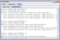 |
| Loading UML model and OCL constraints | Setting transformation parameters | Generated SQL model | Generated SQL integrity views |
This Software was written by Jordi Cabot Sagrera. It is an example how to use the Class Utility which provides some helper methods. Take a look at the classes UtilityTest and Utility if you plan to work directly on the repository. It is a text-based application, which uses the CarWorld-Model in /resources/PoseidonProjects.
This Software was written by Christian Wende for his student research project (Großer Beleg). It provides a framework to implement, manage, configure and execute metamodel based transformations. The distribution comes with an implementation of transformations performing a database-shema generation from uml models.
| 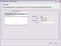 | 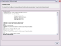 | ||
| Model selection | Transformation | Transformation configuration | Transformation result |
There are three Eclipse plugins shipped with this toolkit. The Base plugin and the OCL Editor plugin were written by Mirko Stölzel. The Visualization plugin was written by Kai-Uwe Gärtner. The OCL Editor plugin provides a text editor for OCL Constraints. The Visualization plugin helps to see what is inside the Netbeans Repository. The Base plugin provides the basic functions of the toolkit to other plugins.
This software was written by Ronny Brandt for his student research project (Großer Beleg). It is an extension of the code generator written by Stefan Ocke. With this software you can load UML-models provided as XMI files and OCL-constraints and generate java code to check these constraints at runtime. This generated code also can be injected in existing java files (instrumentation) and they can be reverse engineered too.
| 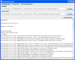 | 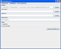 | 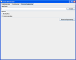 |
| Java Code Generator | Java Code Injector | Reverse Engineering |
{kind=link}
{kind=link}
{kind=link}
{kind=link}
{kind=link}
{kind=link}
{kind=link}
{kind=link}
{kind=link}
{kind=link}
{kind=link}
{kind=link}
{kind=link}
{kind=link}
{kind=link}
{kind=link}